3 Week 3: Corrections
This week I learned something about the corrections, it can be divided into four aspects, geometric correction, atmospheric correction, orthorectification correction and radiometric calibration.
3.1 Summary
3.1.1 How does Landsat work to get imagery
Landsat satellites use scanners to acquire images of the Earth’s surface in different spectral bands.
Landsat 1-6: use a sensor called the Multispectral Scanner (MSS), which scanned six lines simultaneously in each of the four spectral bands (green, red, near-infrared and mid-infrared) for each mirror sweep. The MSS sensor had a spatial resolution of about 80 meters and covered an area of about 34,000 square kilometers per image.
Landsat 7 and 8: The MSS sensor was replaced by more advanced sensors on later Landsat satellites, such as the Thematic Mapper (TM), Enhanced Thematic Mapper Plus (ETM+), Operational Land Imager (OLI) and Thermal Infrared Sensor (TIRS), which have higher spatial resolution, more spectral bands and better radiometric accuracy.
3.1.2 Geometric correction
Why we need geometric corrections:
- The satellite has view angles when watching the Earth
- The undulating nature of the terrain (topography)
- Wind
- Rotation of Earth
Workflow of geometric correction:
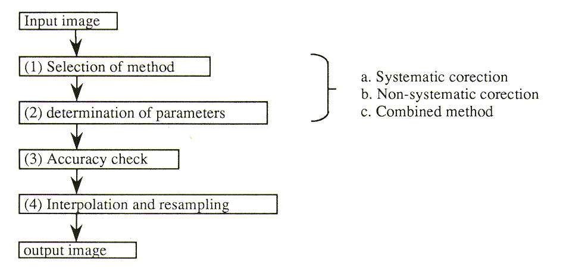
Methods of geometric correction
systematic correction the geometry of a lens camera is given by the collinearity equation with calibrated focal length, parameters of lens distortions, coordinates of fiducial marks. The tangent correction for an optical mechanical scanner is a type of system correction.
Non-systematic correction Polynomials to transform from a geographic coordinate system to an image coordinate system, or vice versa, will be determined with given coordinates of ground control points using the least square method. The accuracy depends on the order of the polynomials, and the number and distribution of ground control points.
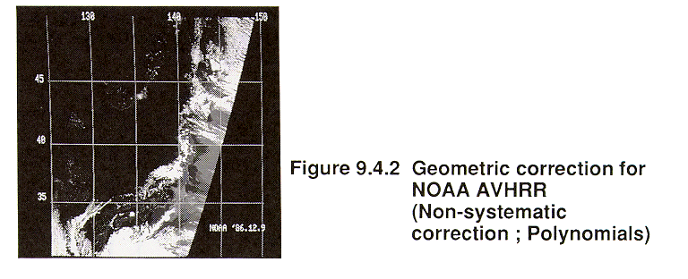
- Combined method Firstly the systematic correction is applied, then the residual errors will be reduced using lower order polynomials. This method is used to obtain accurate images with less error.
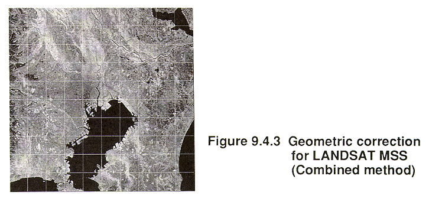
3.1.3 Atmospheric correction
Why we need atmospheric correction:
Reduce the effect from path radiance and the haze created by absorption
To calculate the biophysical parameters (e.g. temperature, NDVI)
The methods to do the atmospheric correction:
Dark object subtraction (DOS), search the darkest value of image and subtract that from each pixel
Psuedo-invariant features (PIFs) use the linear function to adjust the image
ACORN, FLAASH, QUAC, ATCOR
3.1.4 Orthorectification correction
Why we need orthorectification correction:
Provide the coordinates to an image
Remove the distortions, make pixel viewed at straight down
The methods to do the orthorectification correction:
Consider the solar zenith angle and solar azimuth angle to do the cosine correction
The software we can use QGIS, R packages like RStoolbox
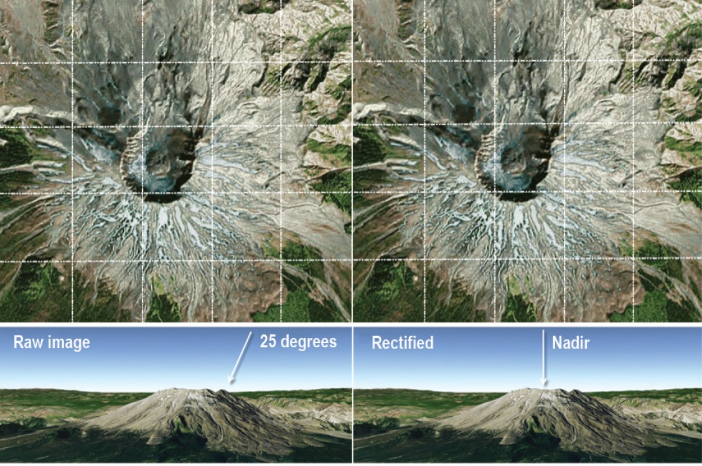
3.1.5 Radiometric calibration
Why we need radiometric calibration:
- Convert the digital number sensors captured from the image brightness (without units) to spectral radiance (with units)
Methods to do the radiometric calibration:
- Use converting function
3.2 Application
3.2.1 Image enhancement
Muhammad Irfan Khan and Muhammad Sharifi compared different remote sensing image enhancement methods based on histogram correction techniques (HE, AGCWD) and transform domain methods (DWT-SVD, ACSEA, RHE-DCT, BF, HIM and SDF). The resulting images were compared visually and quantitatively. It is finally concluded that histogram modification-based methods are better if a higher proportion of detail is present in the image or if the image has a lower resolution, while transform domain methods have better performance for images with a low proportion of detail.
Compared object 1: 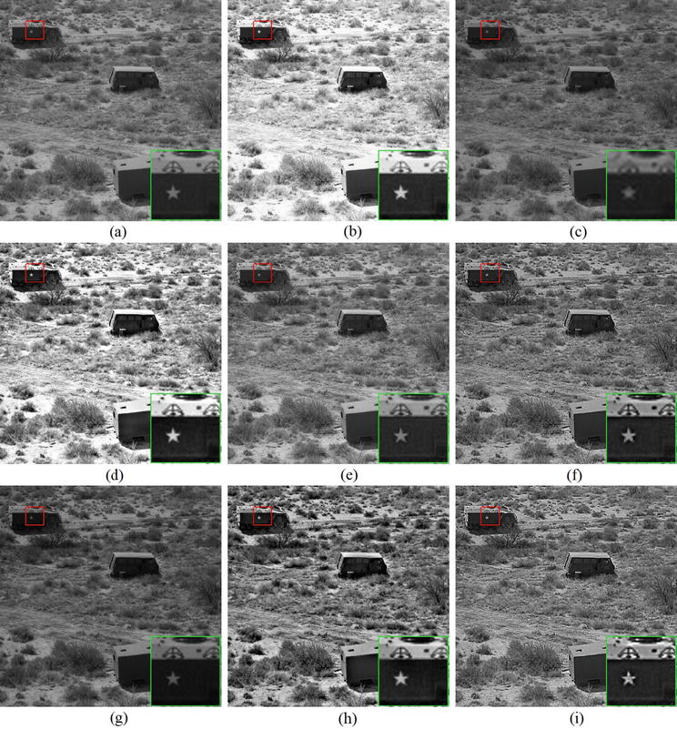
Compared object 2: 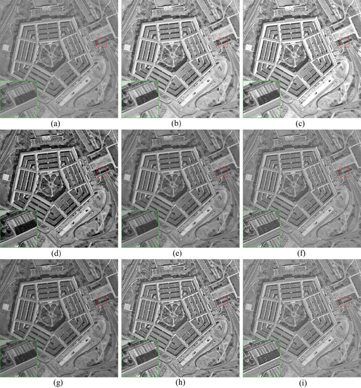
Compared object 3: 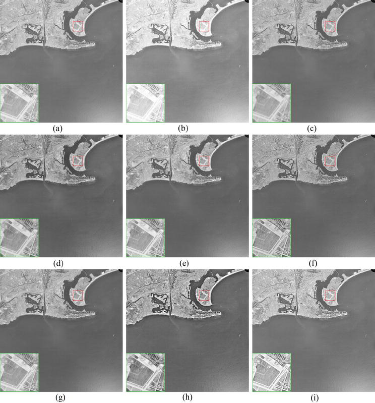
The red boxes are the input images for comparison, and the images from b to i correspond to the different image enhancement methods (b: AGCWD, c: DWT-SVD, d: RHE-DCT, e: ACSEA, f: BF, g: HIM, h: SDF, i: BF-HIM)
Visually, the BF-HIM hybrid method retains colours closer to the reality and enhances edge information better than the previous methods.
quantitatively, they also give a comprehensive comparison between several methods in 4 indicators, as a result, the hybrid BF-HIM performs better other methods:
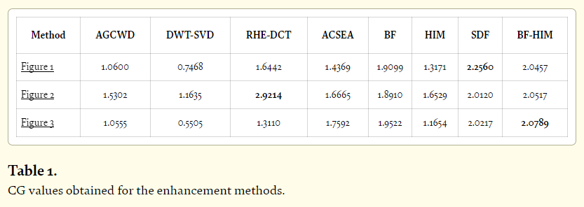
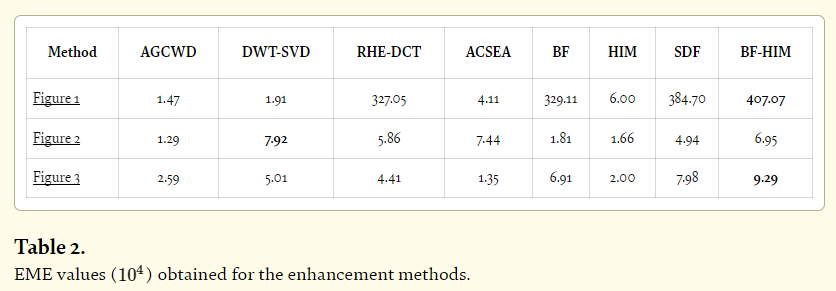
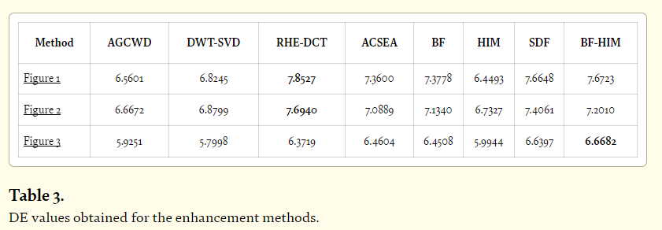
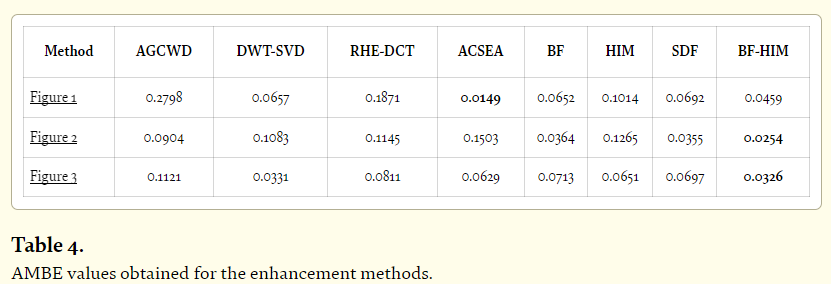
3.3 Reflection
Here are several interested points after doing pieces of work
3.3.1 DOS and radiance
I used the remote sensing image (LC08_L1TP_119038_20230104_20230111_02_T1.txt downloaded from USGS EarthExplorer) to calculate the pixel value of surface reflections generated from scattering by DOS:
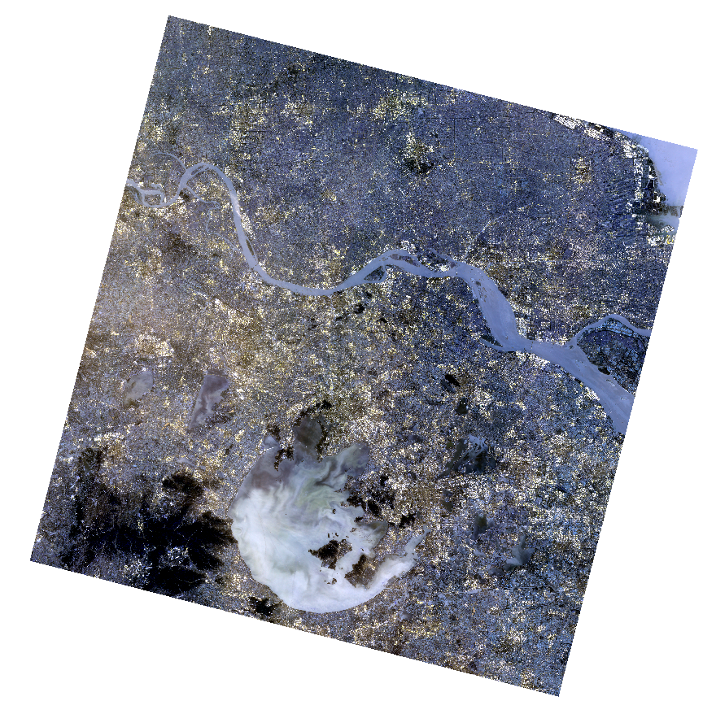
There are several methods to execute the atmosphereic corrections (from digital number to reflectance), two typical examples are DOS and converting radiance to reflectance. In this case, the difference between radiance to reflectance and DOS correction is not significant and both can be corrected accurately. Actually, When the atmosphere is thinner or when the weather is good, the influence of the atmosphere on the ground radiation is less, the TOA and BOA are close to each other, a small part of the light reaches the sensor through the path radiance, so the less dark object needs to be substracted, the effect is close to the radiance. On the contrary, the more pixels need to be corrected the more obvious the effect of the corrected image is compared to the pre-correction image.
3.3.2 Index calculation
Calculate the NDVI (Normalized Difference Vegetation Index) in my case.
\(NDVI = (Band4 - Band5) / (Band4 + Band5)\)
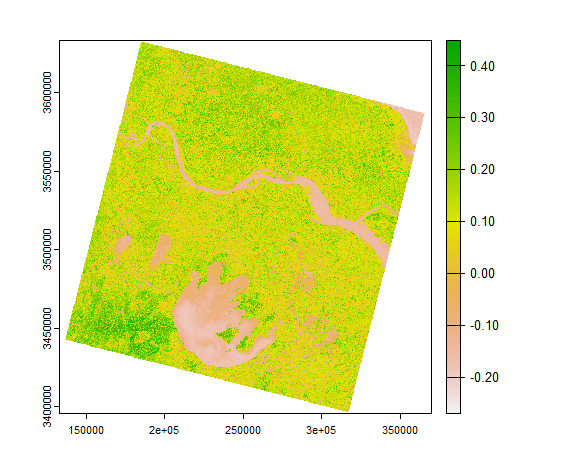
The highlight area of healthy vegetation: 
Explanation: from this map, the vegetation in the Taihu Lake basin is more concentrated to the west of the lake, where the most vegetation is found and where there is less population, while the area north of the lake to the south of the Yangtze River is less vegetated due to the high level of urbanisation, while the area north of the Yangtze River is relatively more vegetated.
Calculate the NDMI (Normalized Difference Moisture Index) Use band 5 and band 6 on the occasion of Landsat8:
\(NDMI = (Band5 - Band6) / (Band5 + Band6)\)
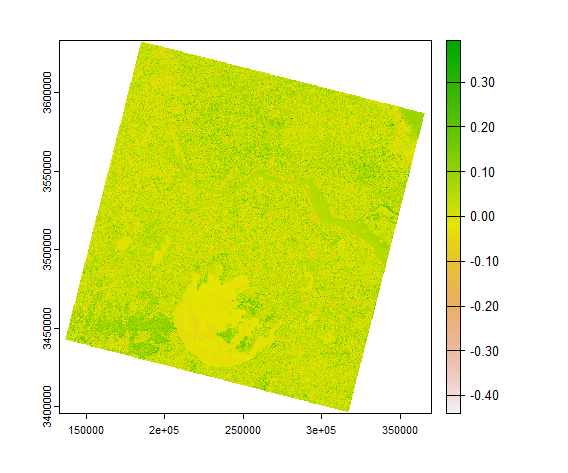

3.3.3 PCA
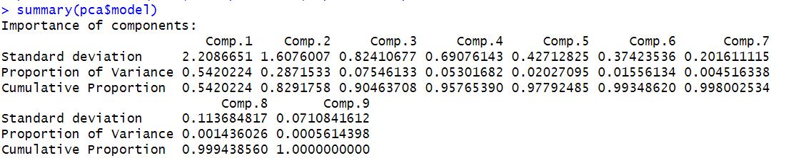
It can be seen that in my study area, the component 1 accounts for 54.20%, and the summary of component 1 to component 3 accounts for over 90%, component 1 can explain the 54.2% data from entire dataset.